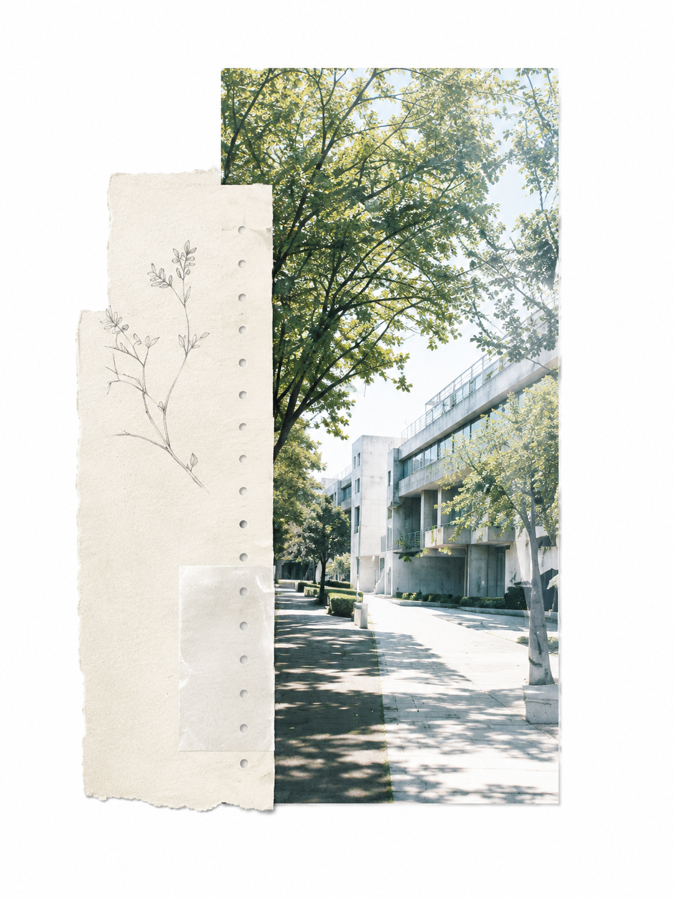
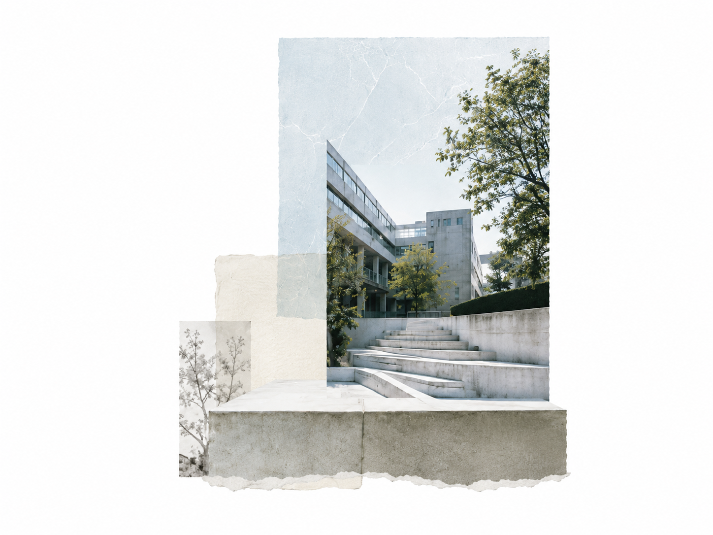
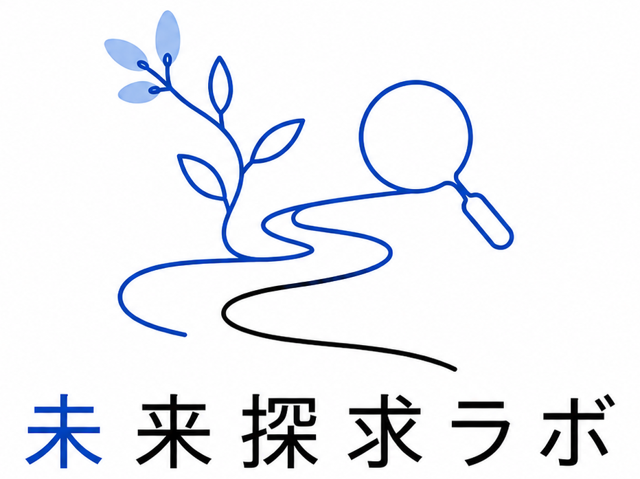

問いを、現場で聞く
まだ形になっていない言葉を聞き、問いの輪郭を探ります
活動を見るTohoku Future Inquiry Lab

まだ形になっていない言葉を聞き、問いの輪郭を探ります
活動を見る
結論にしないままの迷いも、読み返せる形へ残します
記録を見る
忙しい日々の中でも、自分の問いに立ち戻れる場所をつくります
私たちについて
from field to archive
活動は人に会いに行くことから始まり、記録はそこで生まれた言葉を未来へ残します
Events
企業、研究室、地域の現場に会い、想いと課題を聞き取り、社会に残る記録へ整える活動
聞き取った内容を問い、資料、試作品へ整理し、小さく検証する活動
大学の知と社会の現場を接続し、3か月単位で小さな支援策を検証する活動
取材、写真、レポート、制作メモを蓄積し、バックナンバーとして公開する活動
記録から見えた論点を共有し、次に会うべき人や現場を整理する活動
企業、大学、研究室、地域団体の現場にある想いを聞き取り、次の活動へつながる記録として残します
現場に会い、想い、課題、背景を聞き取り、まだ言葉になっていない問いを見つけます
聞き取った内容を記事、レポート、写真、制作メモとして整理します
記録を公開し、大学の知と社会の現場が次に動ける接点を作ります
活動の基準を整え、企業、大学、研究室、地域団体から見た関わる理由を明確にする
現場の想い、背景、課題を聞き取り、問いとして扱える言葉へ整理する
取材内容、写真、資料、活動ログを、社会に共有できる記録へ整える

聞き取った問いを資料、企画、試作品へ変え、現場に返せる形まで整える
活動を読み込み中
記録を読み込み中